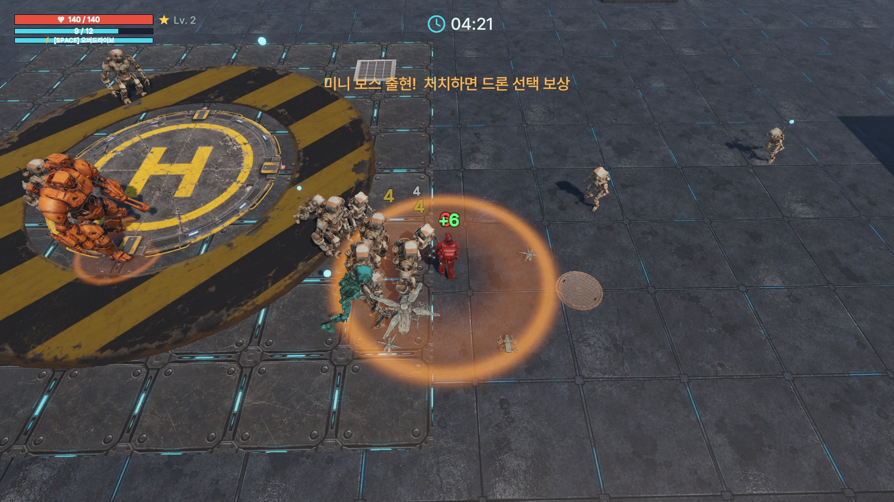
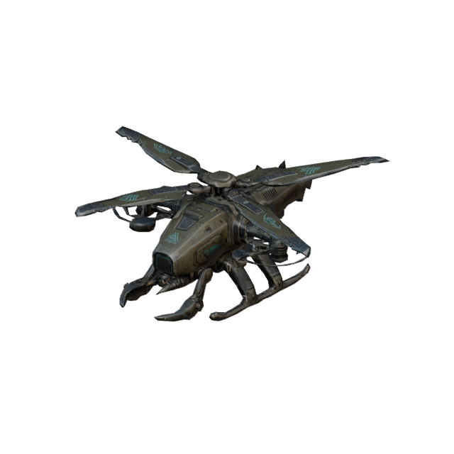
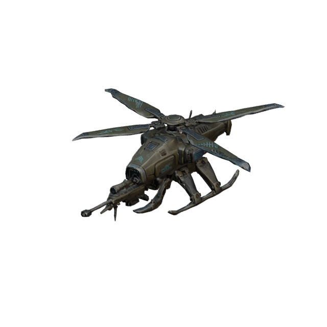
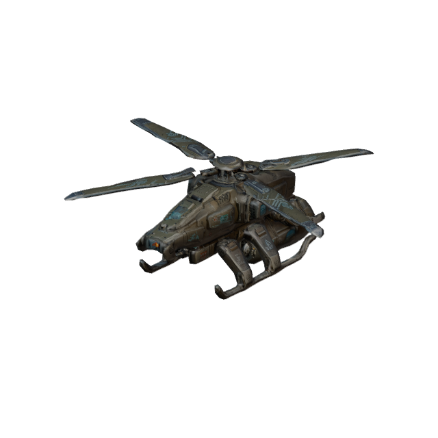
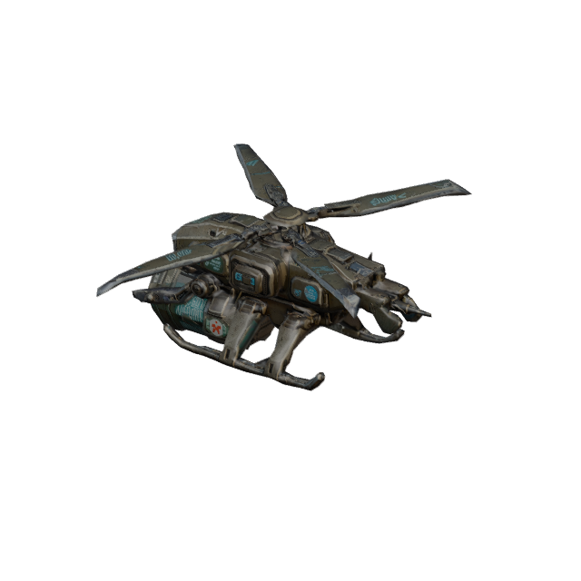
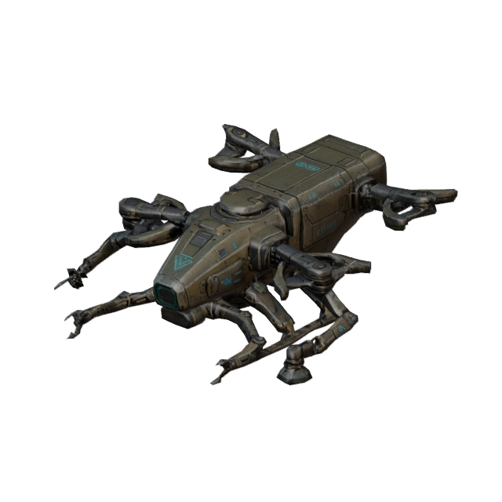
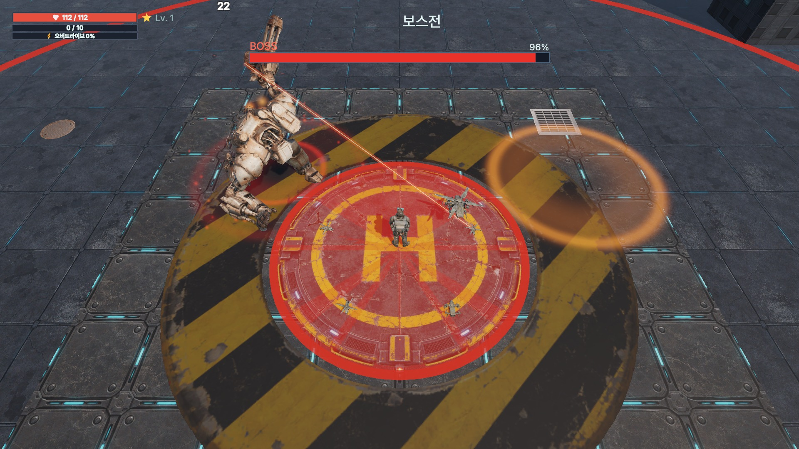

로봇과 보스 예고를 피해 움직인다
(게임패드 왼쪽 스틱도 가능)
게이지가 가득 차면 발동.
5초간 공격·이동 속도가 오른다
폭발이 터질 위치를 마우스로 정한다
(감도 25~300%)
소리 크기 조절 등 설정을 열 수 있다
레벨업 선택지 3개 중 하나는 마우스 클릭 또는 키보드 1·2·3으로 고른다

근접 드론주변을 돌며 벤다
저격 드론멀리서 광선 공격
폭발 드론마우스로 조준
회복 드론체력을 회복
수집 드론경험치 구슬 수집드론 추가 · 강화 · 능력치 중 선택. 무엇을 고르느냐에 따라 매 판 빌드가 달라진다
조각과 크레딧으로 드론을 강화하고, 강화가 쌓이면 모습이 바뀐다. OBT에서 각성 단계(Lv6~8)도 열었다
적을 처치하면 찬다. 일반 4 · 엘리트 25 (가득 100)
발동 중에는 게이지가 차지 않아 무한 연속을 막는다
적이 몰린 위기의 순간에 한계를 넘는 힘을 사용해 탈출한다는 느낌을 주기 위해 만들었다.
화면의 확률·천장 표기는 실제 뽑기가 읽는 수치표와 같은 값 (표기 = 실제)
첫 공개로 드론 3칸을 보여 주고, SR 이상인 칸을 잠근 뒤 나머지만 다시 뽑는다
코어(뽑기, 마일스톤·일일 퀘스트로 획득) · 크레딧(강화, 판 보상으로 획득)
상점은 결제 없는 가상 화면(데모). 클릭만 로그로 남겨 구매 의향을 본다
노멀 5개 + 노멀 클리어로 열리는 하드 5개. 스테이지가 오를수록 적 체력·피해 배율이 올라간다
3분과 6분에 등장, 처치하면 선택지를 한 번 더 받는다
9분에 일반 로봇이 사라지고 원형 경기장에서 1대1. 내려찍기·돌진은 바닥 예고, 체력 절반 이하에서 분노

스테이지 1 적 배율 ×1.0 → ×0.85, 빠른 로봇 첫 등장 지연
뽑기 안내 노출, 근접 드론 범위 확대, 폭발 드론 마우스 조준
보스전은 응답자 모두 "쉬움"
폭발 드론이 피해의 약 65% → 근접 드론 존재감 약함
강화 체감 2.3 / 5, 출시 의향 2.8 / 5
계획: 보스 난이도 · 근접 드론 · 강화 수치 표시 · 조각 안내 · 드론 변신 에셋 추가